12.2 Low Power BLE Application Design
Low Power BLE Application Design
When designing a wireless Bluetooth Application, BLE stack advertisement/connection intervals are the driving factors determining sleep mode entries and exit. There are 2 low power/sleep modes that are supported by the BLE stack
Sleep
Deep Sleep
Sleep and Deep Sleep Modes are synonymous to Standby and Backup Modes and this document may use these terminologies interchangeably.
The following table lists the various functionality/modules of the device that are available in the low power modes supported by BLE stack
Function | Sleep | Deep Sleep |
Legacy ADV | Available | Available |
Extended ADV (Coded PHY) | Available | Not Supported |
BLE Connection | Available | Device can start with advertisement in "Deep Sleep" low power mode and post a BLE connection shift to "Sleep" low power mode |
Peripherals | Available (see product datasheet for more info) | Limited - wakeup sources are available |
Device Wakesup from reset after exiting Sleep Mode | No | Yes |
System RAM | Available | Not retained |
Backup RAM | Not used by Application or BLE stack | Available and used by Application and BLE stack |
Timer used to manage sleep and wakeup times | Wireless Subsystem manages time intervals based on ADV/Connection intervals setup by API calls to BLE Stack library | RTC |
ADV intervals recommended | No min/max ADV interval | Min ADV interval = 500 ms for power consumption savings |
Sleep/ Standby Low Power Mode
What determines Application Sleep Duration and How to control it?
BLE stack allows system to enter low power mode if there is no active data tx/reception or the ble advertisement interval/connection interval. So the system sleep cannot be directly edited as a parameter/ API call.
Device operation in Sleep low power mode?
During system sleep, clock (system PLL) will be disabled and syatem tick will be turned off. FreeRTOS timer needs to be componsated for the time spent in low power mode. RTC timer can continue operating in the low power modes will adjust the FreeRTos timer offset.
So overall system sleep time is determined by the following factors - BLE activity interval, external interrupt (like GPIO) or peripheral interrupts.
Peripherals that are allowed to run in standby/sleep low power mode can continue to run in the "Sleep" low power mode
"Deep Sleep/Backup Mode" only allows for certain peripherals like RTC and INT0 to continue operating in this low power mode
How to enable "Sleep/Standby" Low Power Mode ?
Reference application examples
Implements sleep low power mode with periodic ble legacy adv
Implements sleep low power mode with periodic ble extended (coded PHY) adv
Implements sleep low power mode in a ble connection oriented application and data exchage using Microchip Transparent UART Service. This application also has peripherals that are enabled to run in standby/sleep low power mode
BLE Custom Service Building Block
Implements sleep low power mode in a ble connection oriented application and data exchage using custom service. This application does not have peripherals continuing to run in standby/sleep low power mode
How to use MPLAB Code Configurator to Generate Sleep Mode low power mode code?
Sytem Sleep Mode needs to be enabled in BLE stack H3 compoenent configuration, after enabling this dependant components like RTC (Timer source during sleep) will be requested to be enabled
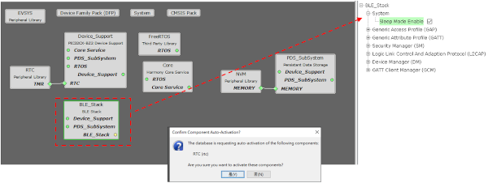Upon enabling sleep mode, FreeRTOS related settings will be set automatically
Tick Mode will be set to Tickless_Idle
- Expected idle time before sleep will be set to 5 (ms)
Figure 12-1. . 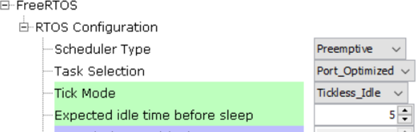 - Tick Hook will be enabled (For user to add any custom code needed to be executed within each tick interrupt)
Figure 12-2. . RTC peripheral library will be added and configured
Note: RTC counter should not be reset (RTC_Timer32CounterSet()) arbitrarily when the system is running
RTC clock source should be set manually, there are 4 options to choose from
FRC (±1% offset)
LPRC ( with larger offset, < ±5%)
POSC <- Candidate of the clock source (better clock accuracy)
SOSC <- Candidate of the clock source (better clock accuracy)
Note: Users must select POSC/SOSC as the RTC clock source as choosing other clock sources will impact BLE connection stabilityFigure 12-3. . 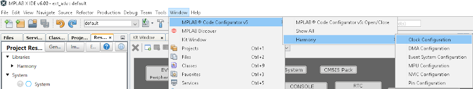- Manually Setting RTC clock source - POSC, open MCC, select "Clock Configuration" and configure as highlighted
Figure 12-4. . 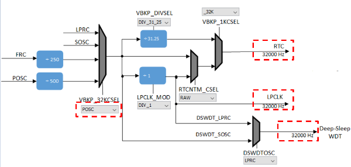 - Manually Setting RTC clock source - SOSC, open MCC, select "Clock Configuration" and configure as highlighted
Figure 12-5. . 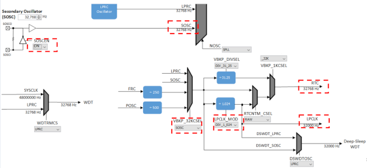Note: Users can only select one clock source POSC or SOSC, steps are mentioned to choose either
- It is recommended to use 48MHz as SYS_CLOCK for better power savings. This can be configured by setting SPLLPOSTDIV1 to
2as shown below.Figure 12-6. . 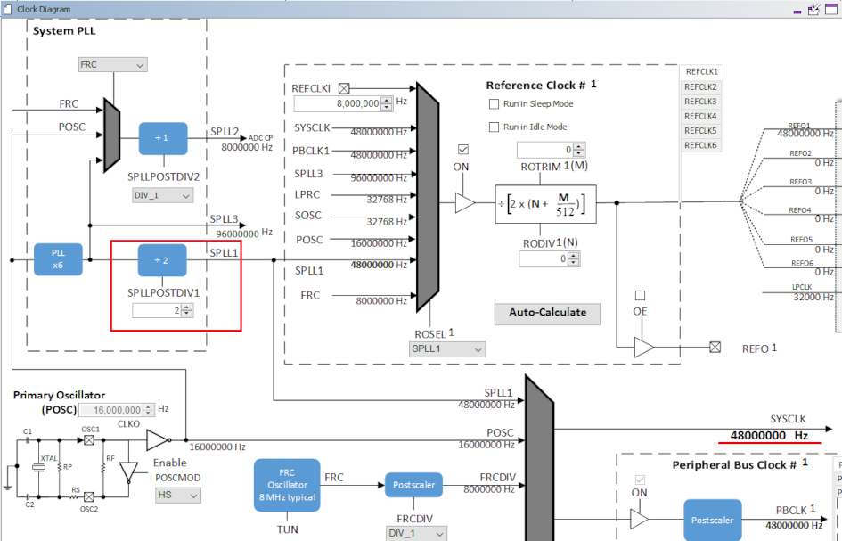 Ensure that JTAG Enable is disabled by clearing the JTAGEN bit in CFGCON0 (Configuration Control Register 0) as shown below. This code snippet can be added to SYS_Initialize()
CFG_REGS->CFG_CFGCON0CLR = CFG_CFGCON0_JTAGEN_Msk;- All Unused pins in the application needs to be set in input mode and the pulldown should be enabled for these pins. This can be configured through pin configuration in Harmony3 Configurator as shown below.
Figure 12-7. . 
Generate Code link for instructions
| Implementation | Location |
|---|---|
| BT Sleep Mode | BLE Stack Library |
| System Sleep Mode | device_sleep.c |
| Execute BT/System Sleep | app_idle_task.c |
| RTC Based Tickless Idle Mode | app_idle_task.c |
FreeRTOS provides Tickless IDLE Mode for power saving, this can be used to stop periodic tick interrupts during idle periods (periods when there are no application tasks that are able to excute) For the lost count on time during the IDLE mode, RTC timer is used to make a correcting adjustment to the RTOS tick count value, when it is restarted (after waking up from sleep) More information on low power tickless mode is available here. The Tickless Idle Mode will be executed automatically when the Idle task is the only task able to run, because all the application tasks are either in blocked or suspended state. To prevent the system from entering sleep/standby low mode and waking up immediately, the minimum sleep time(IDLE time) is automatically set to 5 ms.
Note: maximum sleep time is equal to the maximum period of the RTC 32 bit counter - 134217.8 sec (around 37 hours)
In order for the system to enter sleep, system needs to request bluetooth wireless subsystem to sleep. This is accomplished by calling API - BT_SYS_EnterSleepMode() for BLE
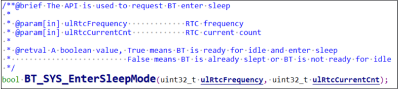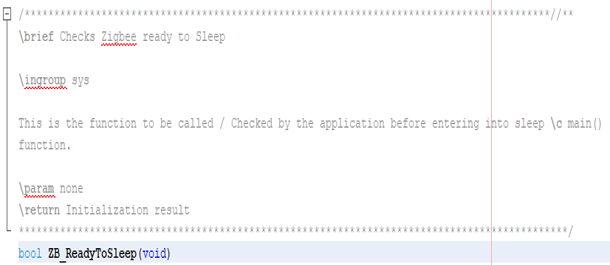The API to call to ensure subsytem is sleeping (inactive) or ready for system to enter sleep mode is - BT_SYS_AllowSystemSleep

If the expected sleep time is greater than 5 ms, system is allowed to enter sleep mode by checking for 2 conditions
Bluetooth subsystem is inactive
eTaskConfirmSleepModeStatus() returns eNoTasksWaitingTimeout, more information here.
Pseudo code in RTC based Tickless Idle Mode: ``` if ((BT_SYS_AllowSystemSleep() || ZB_ReadyToSleep()) && ( eTaskConfirmSleepModeStatus() != eAbortSleep ) && (user_condition)) { //Enter System Sleep Mode DEVICE_EnterSleepMode (); //RTC Based Tickless Idle Mode } ```
When both the conditions as mentioned in point 3 are met, we enter RTC based Tickless Idle mode (Stop the system tick, use of RTC timer to set the sleep time, disable interrupts)
System will enter sleep mode after setting the RTC based Tickless Idle Mode by calling API - Device_EnterSleepMode() and then wait for Interrupt (WFI) instruction is executed
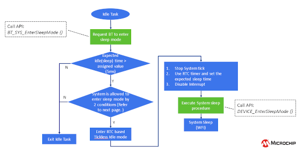
How does the system exit from sleep mode?
Sytem when in sleep/standby mode can be waken up by RTC timeout, BLE or GPIO interrupt
Sleep mode exit is initiated by calling API - DEVICE_ExitSleepMode()
Upon exiting the sleep mode, interrupts need to be reenabled to allow the inteerupt service routine to be executed
- Interrupts are disabled as the sys tick needs to be compensated (Tickless IDLE mode)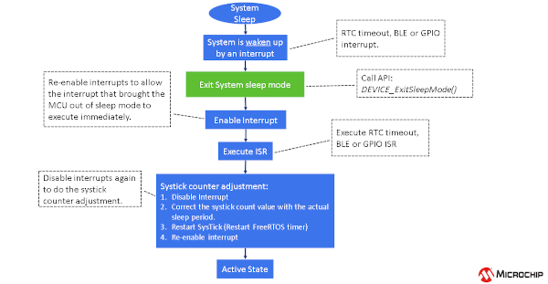
Deep Sleep/Backup Low Power Mode
What determines Application Sleep Duration and How to control it?
User Application determines the duration application stays in Deep Sleep low power mode. When user selects an advertisement interval and enables deep sleep mode in the BLE_Stack component of Microchip Code configurator, all the necessary API's required to enter and exit deep sleep low power mode are generated. User application holds the responsibility to enable deep sleep adv and determine the sleep and wakeup duration based on the advertisement interval requirements.
Unlike sleep mode, which uses a timer in the wireless subsystem to determine sleep and wakeup duration, deep sleep mode does not use this timer (as it is unavailable in Deep Sleep low power mode). Hence, we utilize the RTC timer(as it is available to run in Deep Sleep) and its interrupt based on the Deep Sleep adv interval that is set in application to wakeup the device from sleep sleep. User can enter Deep Sleep low power mode post a succesful reception of "BLE_GAP_EVT_ADV_COMPL" event from BLE stack.
Device operation in Deep Sleep low power mode?
When the application layer initiates the BLE stack to enable Deep Sleep Advertisement, the BLE stack backs up advertising parameters and application data into backup RAM and performs a one-time advertisement event.
Application layer will put the system in Deep Sleep mode and control Deep Sleep wakeup time using RTC timer. User is responsible for putting the system in deep sleep mode and control the wakeup from RTC.
Based on the RTC Timer interval, the device wakes up from Deep Sleep low power mode. Exiting Deep Sleep mode is similar to Power on Reset. Backup RAM saves the adv parameters through a reset, upon wakeup BLE stack will be able to continue advertisements based on the data retained in backup RAM.
What is the device startup and initialization time when waking up from deep sleep low power mode, since the device wakes up from reset?
Device startup and initialization code is diffrent and more optimizied to enable fast completion of initialization post a reset caused by waking up from deep sleep low power mode. MPLAB code configurator generates API "DEVICE_DeepSleepIntervalCal" to calibrate the sleep duration based on the ADV interval chosen. The device's startup and initialization procedures are optimized to make the device enter deep sleep low power mode as soon as possible. Total time spent during device startup and firmware initialization is approximately 10 ms. Average device startup time is 1.5 ms. The firmware intialization time for various applications can change based on the user choice of peripherals and clocks to be initialized.
How to maintain I/O state when device comes out of reset when using deep sleep low power mode?
Device needs to backup all GPIO register settings prior to entering the deep sleep mode and recover these settings when devices wakes up from deep sleep prior to clearing the Deep Sleep register "DSCON". This register is cleared by the following generated API "DEVICE_ClearDeepSleepReg()"
How to use MPLAB Code Configurator to Generate Deep Sleep Mode low power mode code?
- Add the Harmony Components to project graph, some components are optional based on Application being developed
Figure 12-8. . 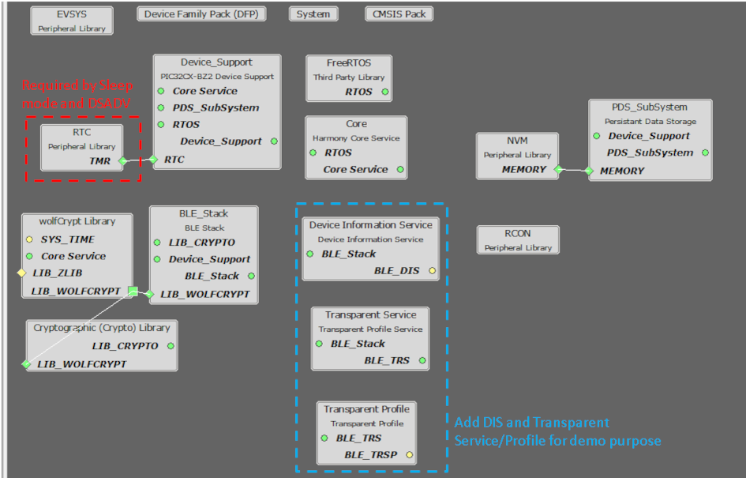 - Configuration settings for "BLE stack" component
Figure 12-9. . 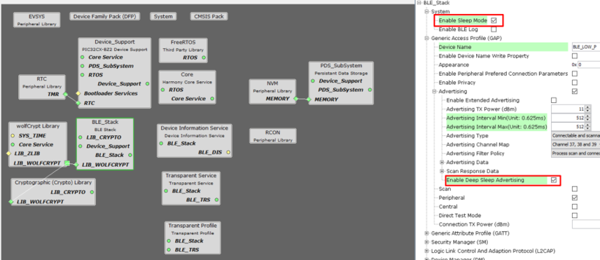 - Configuration settings for "RTC" component
Figure 12-10. . 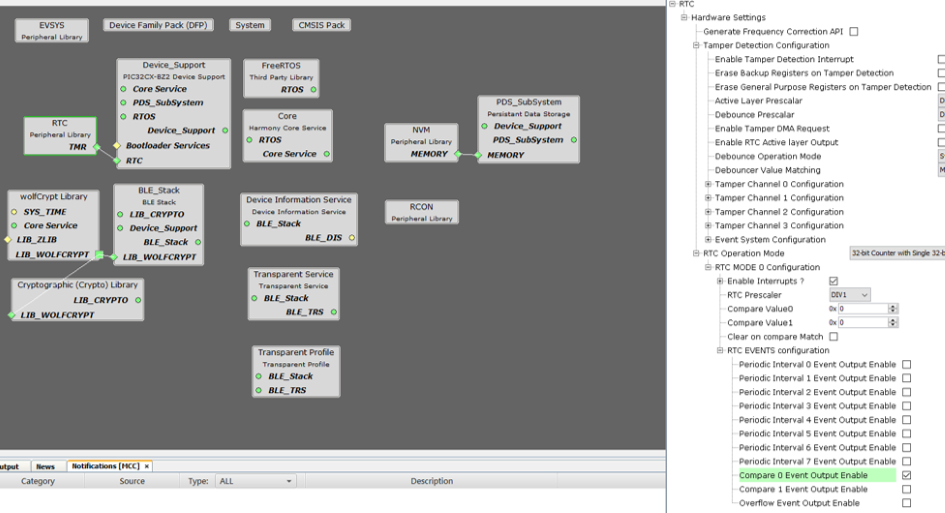 - "POSC" as Low Power Clock Source (LPCLK), select clock configuration
Figure 12-11. . 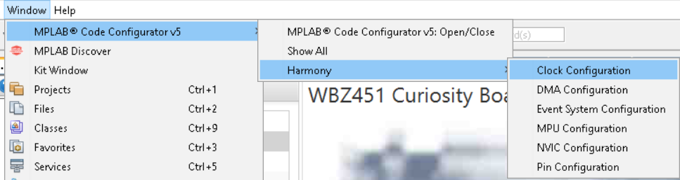Figure 12-12. . 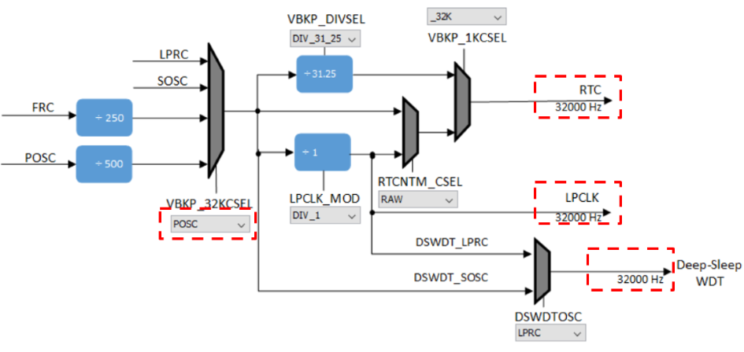Figure 12-13. POSC Config bits generated after code generation. 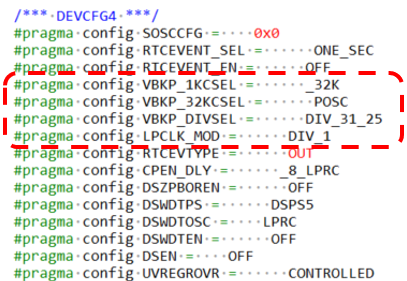 - "SOSC" as Low Power clock source(LPCLK), select clock configuration.
Figure 12-14. . 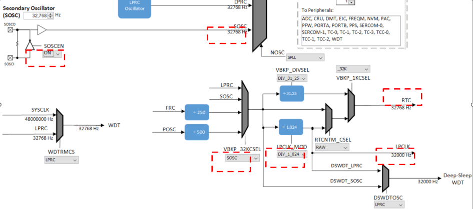Figure 12-15. SOSC Config bits generated after code generation. 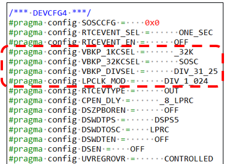 Clock Switching mechanism , if LPCLK source is set as POSC clock source using clock configuration, the FW switch to LPRC as LPCLK source as POSC clock source is unavailable in Deep Sleep Low Power Mode.
How to enable "Deep Sleep/Backup" Low Power Mode ?
Reference application examples
On reset Device starts in Deep Sleep Mode, upon press of SW1 button on curiosity board the sytem starts Deep Sleep Advertisements, once connected to a central device the device will switch to Sleep low power mode
Recommendations for using Deep Sleep ADV mode
Deep Sleep ADV should be used when the ADV interval is >= 500 ms
What are the BLE Advertisements supported when using Deep Sleep Low Power Mode?
BLE Legacy Advertisement types "ADV_IND", "ADV_SCAN_IND", "ADV_DIRECT_IND_LOW" and "ADV_NONCONN_IND" are supported when using Deep Sleep mode
What is the procedure for retaining Application data in backup RAM?
User should define the variable as persistent. Persistent variables are variables that should not be cleared by the runtime startup code, such as during a reset. User should initialize a persistent variable as follows. The data read/write into backup RAM must be single word (4 bytes)
uint32_t __attribute__((persistent)) backup1;
User firmware should not assign initial value for persistent variables.
Bootloader Firmware Authentication when using deep sleep low power mode?
If the bootloader has Firmware Authentication enabled, the bootloader checks for Firmware Authentication upon all types of resets like POR, BOR, etc. Firmware Authentication is skipped only when the device wakes up from Deep Sleep Low Power Mode.
RTC Clock Sources that are recommended to be used when using deep sleep low power mode?
SOSC or LPRC are the clock sources recommended when using deep sleep mode